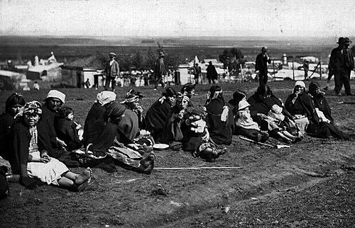

Ley Indígena

La Ley 19.253, conocida como Ley Indígena, fue publicada el 5 de octubre de 1993, durante el gobierno de Patricio Aylwin. Su origen fue el Acuerdo de Nueva Imperial, firmado en 1989 entre Aylwin, entonces candidato, y organizaciones indígenas, que dio paso a la Comisión Especial de Pueblos Indígenas. La ley reconoció como principales etnias del país a los pueblos mapuche, aymara, rapa nui, atacameño, quechua, colla, kawésqar y yagán; leyes posteriores sumaron a los pueblos diaguita (2006), chango (2020) y selk'nam (2023). Creó la Corporación Nacional de Desarrollo Indígena (CONADI), con sede en Temuco, un Fondo de Tierras y Aguas Indígenas, áreas de desarrollo indígena y programas de educación intercultural bilingüe, y protegió legalmente las tierras indígenas. Fue un avance importante tras siglos de pérdida territorial, incluida la Ocupación de la Araucanía. Sin embargo, organizaciones indígenas e investigadores han señalado sus límites: habla de "etnias" y no de "pueblos", no incluyó reconocimiento constitucional ni derechos políticos colectivos, y no evitó conflictos como el de la central hidroeléctrica Ralco. En 2008, Chile ratificó el Convenio 169 de la OIT sobre pueblos indígenas.
Versión para niños
En Chile viven distintos pueblos originarios, como el mapuche, el aymara y el rapa nui. Durante mucho tiempo, sus culturas y sus tierras no fueron respetadas. En 1993 se publicó la Ley Indígena, que reconoció a estos pueblos, protegió sus tierras y apoyó sus idiomas y tradiciones. También creó la CONADI, una institución con sede en Temuco que trabaja junto a las comunidades indígenas.
Para maestros
Nivel sugerido: 2° medio
Objetivo: Conocer los principales contenidos de la Ley Indígena y analizar la relación entre el Estado de Chile y los pueblos originarios desde 1990.
Preguntas para la clase:
- ¿Qué derechos reconoce la Ley Indígena a los pueblos originarios?
- ¿Por qué algunas organizaciones indígenas consideran que la ley es insuficiente?
- ¿Qué diferencia hay entre reconocer "etnias" y reconocer "pueblos"?
Actividad (20–30 min): En grupos, los estudiantes investigan un pueblo originario reconocido por la ley y elaboran una ficha con su territorio, su lengua y una demanda actual. Si hay estudiantes de pueblos originarios en el curso, se les invita a participar de forma voluntaria, sin exponerlos.
Fuentes sugeridas: Biblioteca del Congreso Nacional (BCN); Corporación Nacional de Desarrollo Indígena (CONADI); Museo Chileno de Arte Precolombino.
Objetivos de Aprendizaje (Currículum Nacional)
- 1° medio · HI1M OA 24 Evaluar … las relaciones de conflicto y convivencia con los pueblos indígenas (aymara, colla, rapa nui, mapuche, quechua, atacameño, kawéskar, yagán, diaguita)
- 2° medio · HI2M OA 21 Analizar la sociedad chilena posterior a la recuperación de la democracia … y la demanda de derechos de grupos históricamente discriminados
- 3° o 4° medio (Chile y la región latinoamericana) · FG-CHLA-3y4-OAC-04 Analizar … el presente de distintos pueblos indígenas de Chile y Latinoamérica … los avances y desafíos en su relación con los Estados nacionales
Revisión humana pendiente. Cómo se revisa · Reportar un error
Cómo citar: Historia de Chile. (2026). Ley Indígena. En Historia de Chile: atlas y línea de tiempo. https://moises-salgado.github.io/historia-de-chile/momento/ley-indigena.html